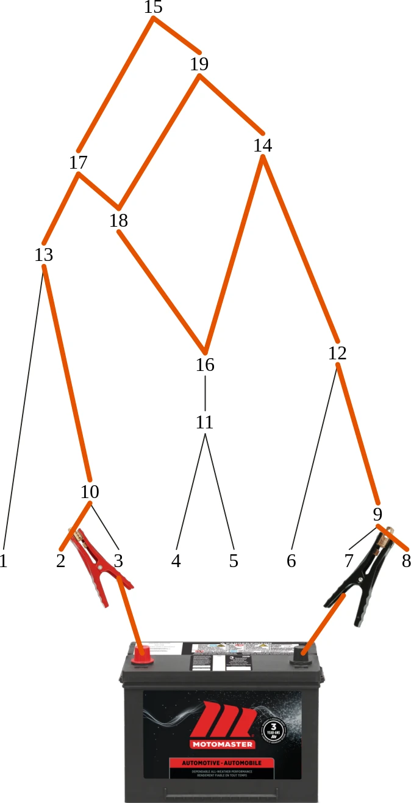
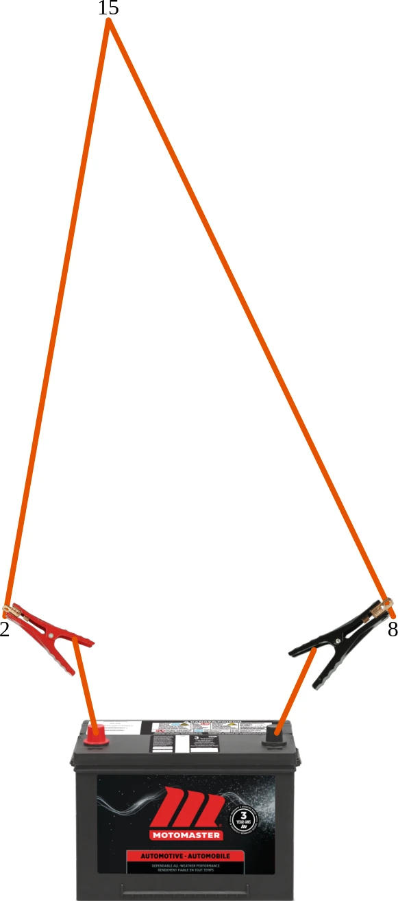
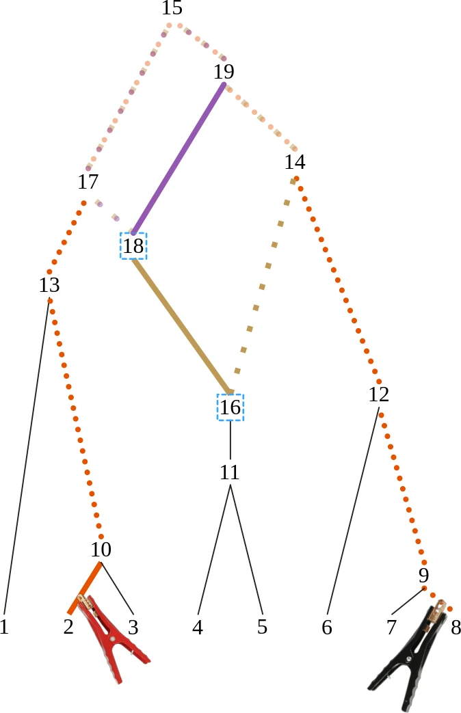
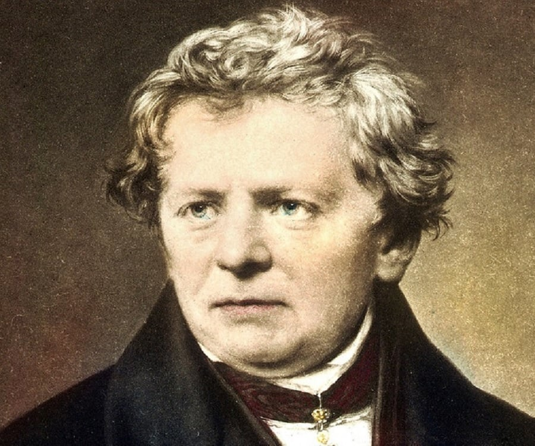
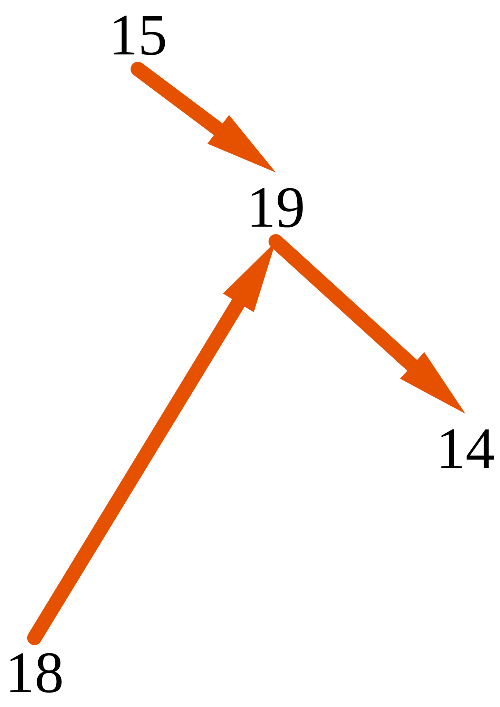
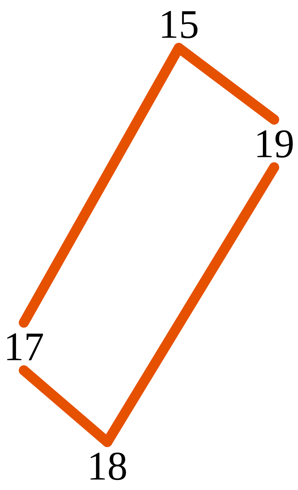

Courant (Ampère, \( \boldsymbol w \)):
\( \# \) électrons / seconde
Différence de potentiel (Volt, \( \boldsymbol v \)):
\( \propto \) différence énergie potentielle entre deux points
Impédance (Ohm, \( \boldsymbol Z \)): Constante de proportionalité entre \( \boldsymbol v\) et \( \boldsymbol w \)
\( \Re(z) = \) résistance (chaleur)
\( \Im(z) = \) réactance (phase)
Théorème de Thévenin
[Léon Charles Thévenin, 1883] Tout circuit linéaire ne contenant que des sources de voltage/courant
et des impédances est équivalent à une source de voltage en série avec une impédance.
Équivalent de Thévenin


Espace des cycles
Espaces des arrêtes: \( \{ E \to \operatorname{GF}(2) \text{ linéaires} \} \)
\( = \) S-e des cycles (\( \mathcal C \)) \( \oplus \) S-e des coupes
ARG
\( \dim \mathcal C(G) = \) # recombinaisons
Base des cycles fondamentaux \( C \) facile à calculer
Calcul des cycles fondamentaux

Trois lois
Ohm

$$ \boldsymbol v = \boldsymbol Z \boldsymbol w + \boldsymbol g$$
Kirchhoff (\( w \))

$$ \boldsymbol B \boldsymbol w = \boldsymbol 0 $$
Kirchhoff (\( v \))

$$ \boldsymbol C' \boldsymbol v = \boldsymbol 0 $$
Solution?
\( \boldsymbol v \) fonction de \( \boldsymbol w \)
\( \boldsymbol g \) contrôlé
\( \boldsymbol Z, \boldsymbol B \) et \( \boldsymbol C \) connue
Kirchhoff (\( w \)) \( \Rightarrow \) courant source \( w_S \) \( = \) courrant total
Shannon, C.E. (1940). A symbolic analysis of relay and switching circuits [Mémoire de maîtrise, Massachusetts Institute of Technology]. DSpace@MIT. https://dspace.mit.edu/handle/1721.1/11173